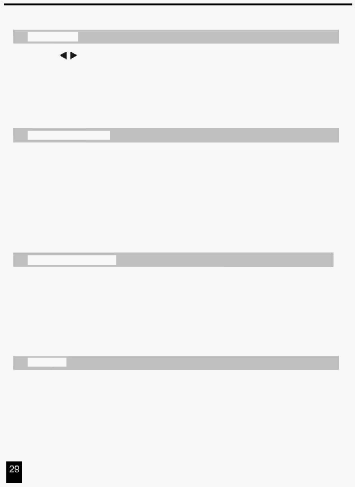

4. Резюме Головних Функцій
Кнопка Park
1. В CHNS
SCENES режимі, натисніть кнопку вибору режиму виконання програм
Між режимом Single і режимом Mix.
2. У режимі Double Preset, натискання цієї кнопки еквівалентно установці повзунка Master B
у верхнє положення.
3. У режимі Single Preset, ця кнопка може тимчасово зберегти поточне значення виходу, з
Повзунка Master B для регулювання.
Кнопка Add and Kill
Кнопка ADD/KILL змінює режим роботи кнопок Flash. Звичайно кнопки Flash
перебувають у режимі Add, тому натискання будь-якої кнопки Flash не видаляє
інші сцени, дозволяючи багатьом сценам виконуватися одночасно.
Режим Kill (видалення) запускається шляхом натискання кнопки Add/Kill й, при
цьому засвітиться індикатор над кнопкою. При натисканні будь-якої кнопки Flash
буде вилучені інша активна сцена або програма.
Кнопка Double Preset
1.
Натисніть кнопку Mode Select і ввійдіть у режим Double Preset.
2.
У цьому режимі, повзунки каналів Channel 1-24 і каналів 25-48 обоє
управляють каналами 1-24.
3.
Повзунок Master A управляє повзунками Channel 1-24 у той час як повзунок
Master B управляє повзунками Channel.
Приклад
1.
Увійдіть у режим Double Preset.
2.
Установіть повзунків Channel 1 до 6 у верхнє положення й переміщайте
повзунків Channel 19 до 24 до максимуму.
3.
Перемістіть повзунки Master A й B на той самий рівень, перемістіть їх в
одному напрямку, Ви одержите сцену.